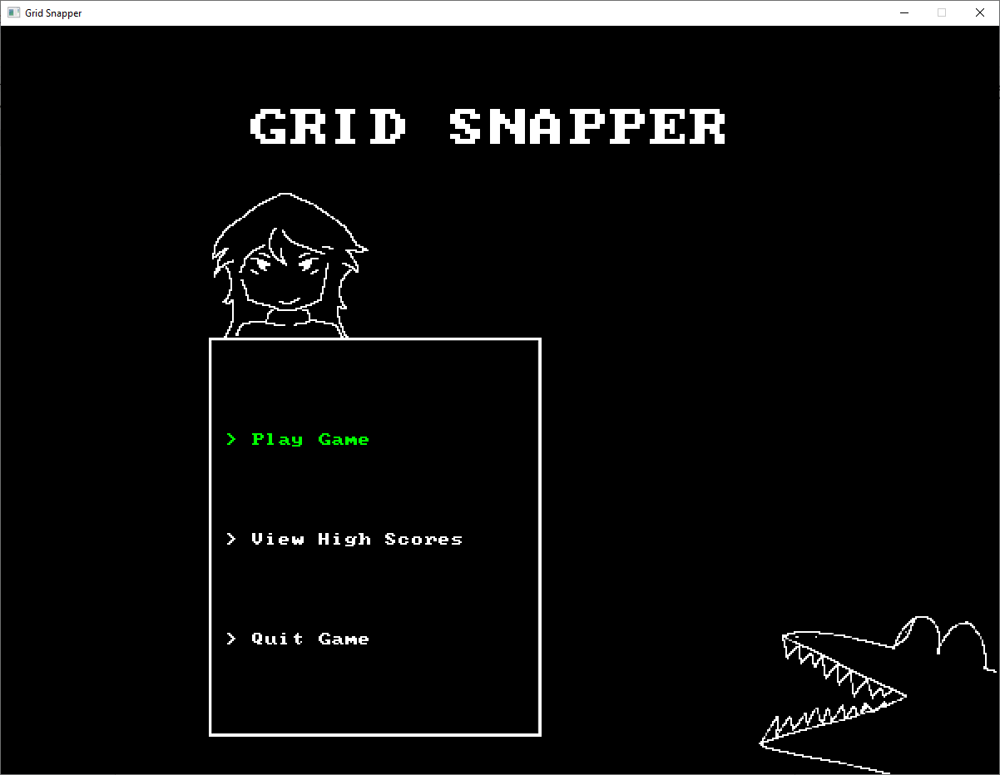
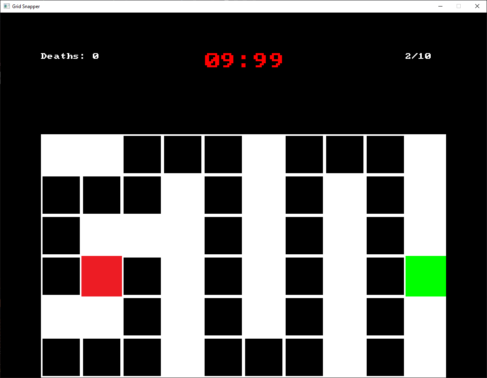

Test out your muscle memory with this speedrunning-focused arcade game. Practice the levels to improve your time and fight against Snap and Croc to get on the leaderboard.

"I'm the best there is. Croc ain't got nothing on me." - Snap

You can make this game as easy or as hard as you want to...
Currently, this game is only available on Windows. Follow the steps below to play it yourself.
Step 1: Click the download link to go to the latest release for the game.
Step 2: Under "Assets", select the ".zip" file to download the build.
Step 3: Unzip the folder. Remember where it unzipped to!
Step 4: Open the folder, navigate to the "Release" folder, and click "Grid Snapper.exe" to run the game!
One day, this download process may look less sketchy, but I can't be bothered to change it today.